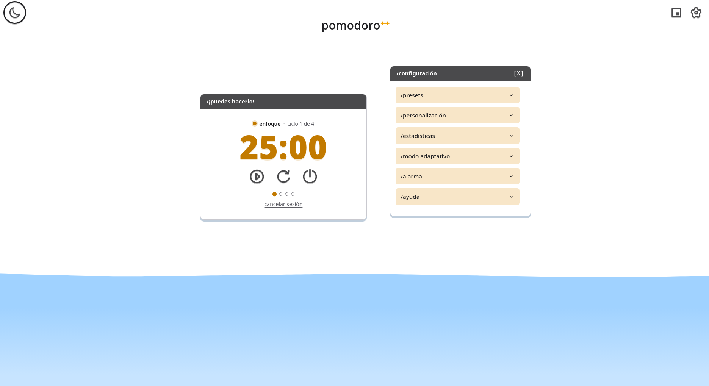
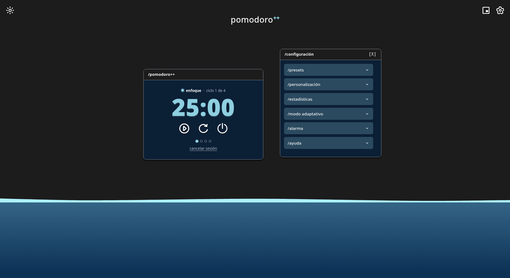
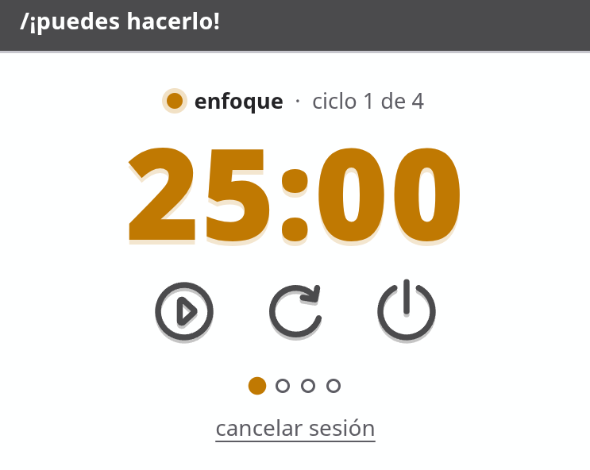
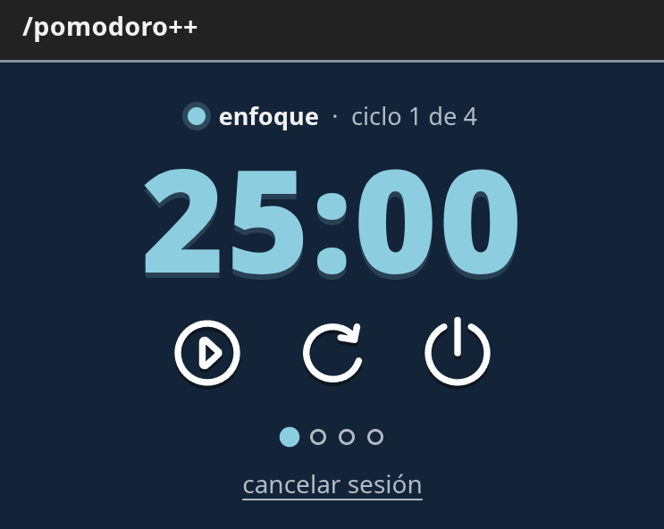
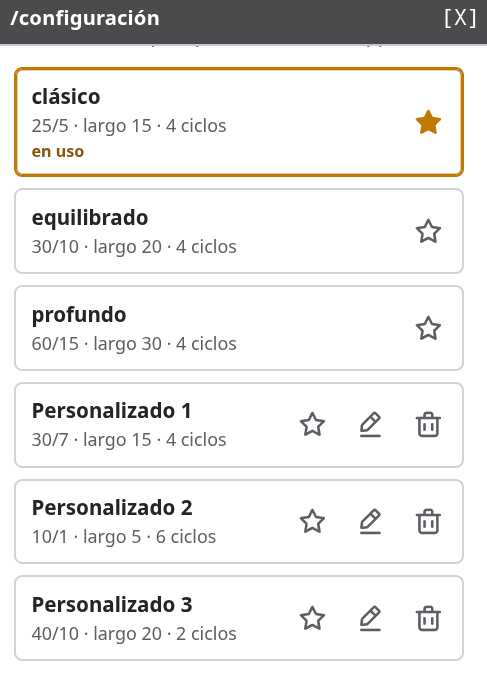
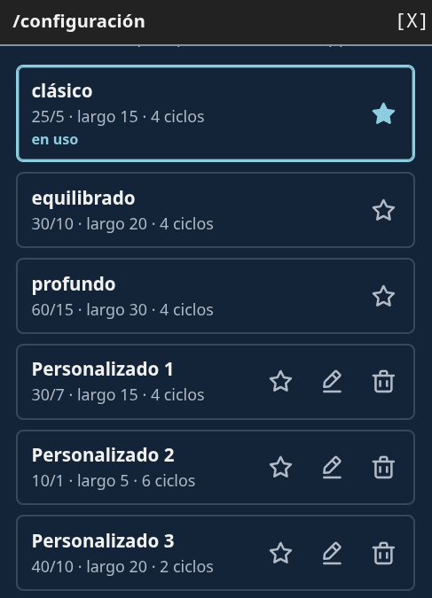

Temporizador Pomodoro con modo adaptativo. Enfócate, descansa y repite.
Última versión: …


Todo lo que necesitas para enfocarte


Ciclos de enfoque y descanso
Trabaja en bloques de concentración con descansos cortos y largos, y sigue tu avance con los indicadores de ciclo. Inicia, pausa o reinicia con un clic.


Temporizadores propios
Crea presets con tu tiempo de concentración, tus descansos y el número de ciclos. Marca uno como favorito y será el que se abra al iniciar la app.
Se adapta a ti
Con el modo adaptativo, el temporizador ajusta los bloques de tiempo, reduciendo el descanso y aumentando el enfoque cada ciclo.
Variantes de colores
Modo claro y oscuro, y colores de acento: naranja, verde, azul cielo y violeta. En modo oscuro cada color usa una versión más suave para cuidar tu vista.
Para concentrarte mejor
Mira tu progreso
Consulta cuánto tiempo has pasado enfocado y entiende cómo evoluciona tu constancia con el paso del tiempo.
Mantente
Elige el sonido y el volumen del aviso al terminar cada bloque, y silénciala con un clic cuando no la necesites.
Siempre a la vista
Abre un mini temporizador flotante que puedes dejar visible mientras trabajas en otras tareas.
Todo desde el teclado
Controla el temporizador mediante los atajos de teclado disponibles.
Tus datos se quedan contigo
Pomodoro++ no recolecta ni envía ninguno de tus datos por medio de internet. Tus datos se guardan en tu dispositivo.
Código abierto y en constante mejora
Pomodoro++ se desarrolla en Codeberg. Descarga cualquier versión, revisa el código o cuéntanos qué mejorarías.